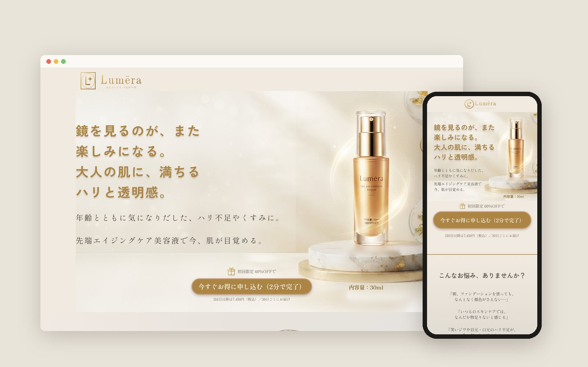
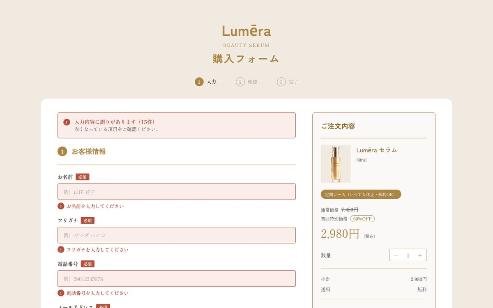
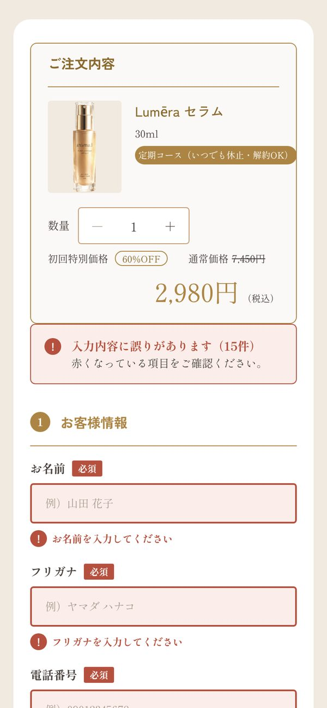
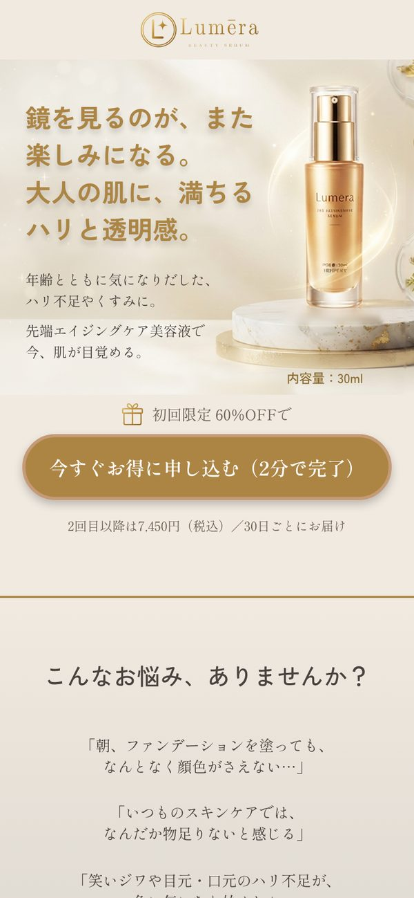

LP・購入フォーム・お問い合わせ／自主制作
Lumēra
年齢による肌の変化が気になり始めた女性に向けた、架空のエイジングケア美容液のLPです。LPから購入フォーム、お問い合わせまで、PC・スマホあわせて14画面をFigmaで設計し、Webサイトとして実装しました。
- 制作
- 自主制作（1人）
- 期間
- 約3週間（実装まで）
- 担当
- 企画、デザインカンプ（Figma）、画像の調整（Photoshop）／実装はAI（Claude）と協働
- ツール
- Figma、Photoshop、Claude、Gemini
- 素材
- 写真はAIで生成し、Photoshopで調整

目的とターゲット
目的：初めての人に、定期コースの初回価格で「試してみよう」と思ってもらうこと。LPで魅力を伝えるだけでなく、購入フォームで迷わず申し込み終えるところまでを設計しました。
ターゲット：ハリ不足やくすみなど、年齢による肌の変化が気になり始めた30〜50代の女性。
コンセプト
「上質さと、信頼感」。初めての美容液を定期コースで申し込むときの不安を減らすために、落ち着いた配色で品の良さを出しつつ、価格や解約の条件は分かりやすく見せることを意識しました。
デザインのポイント
色は「ベージュ × ゴールド」。小さい文字用に暗いゴールドを追加
ゴールド（#AC8545）は、ボタンなどの面では上品に見えますが、小さい文字に使うと背景との差が足りず読みにくくなります。そこで小さい文字用に暗いゴールド（#8A6A2F）を加えました。また、ほとんど同じゴールドが2色あったので1色にまとめ、色ごとの役割を整理しました。
背景#FBF9F7
背景（交互）#F0EAE1
ゴールド#AC8545 ボタン・飾り
暗いゴールド#8A6A2F 小さい文字
本文#4A423E
補足#6E6155
見出しはゴシック、本文は明朝
見出しは読みやすいZen Kaku Gothic New、本文は上品さを出すShippori Minchoにして、役割で書体を分けました。
商品名の表記をそろえる
ロゴやボトルは「Lumēra」、本文は「ルミナスリッチ セラム」と、商品名の表記が分かれていました。見る人が別の商品だと迷わないよう、「Lumēra セラム」に一本化しました。
定期コースであることを、申し込みの近くで伝える
定期と単品でフォームを分けず、1つのフォームにまとめました。「いつでも休止・解約OK」はゴールドのバッジで目立たせ、スマホでボタンの文言を短くしたときも、ボタンの近くに定期コースの注記を残しています。
うまくいかなかったときの画面まで作る
入力ミスがあったときは、上部に件数を出し、各項目の下に理由を表示します。カードが使えなかったときの決済エラーと、お問い合わせで同意する前は送信ボタンを押せない状態も、PC・スマホそれぞれで設計しました。



スマホ版は402pxで組み直す
本文14px・見出し22px・左右の余白24pxを基準にしました。見せたい写真は横幅いっぱいに縦に並べ、FAQは開閉式にして長さを抑えています。
苦労したこと・学んだこと
LP本体とフォーム、エラー画面の14枚のカンプを、すべてAuto Layoutで作るのがとても大変でした。
最初に作ったPC版のLPはAuto Layoutを使わずに組んでいたため、実装を考えて、複製してAuto Layoutで作り直しました。デザインの段階から実装を意識して組んでおくと、あとの作業が大きく変わることを学びました。
AIの使い方
デザインカンプはFigmaで自分で作り、実装はClaudeと協働しました。実装された画面とカンプを見比べ、PC版とスマホ版で文言や数字の表記がずれていた箇所は、デザイン側で統一してから直しています。